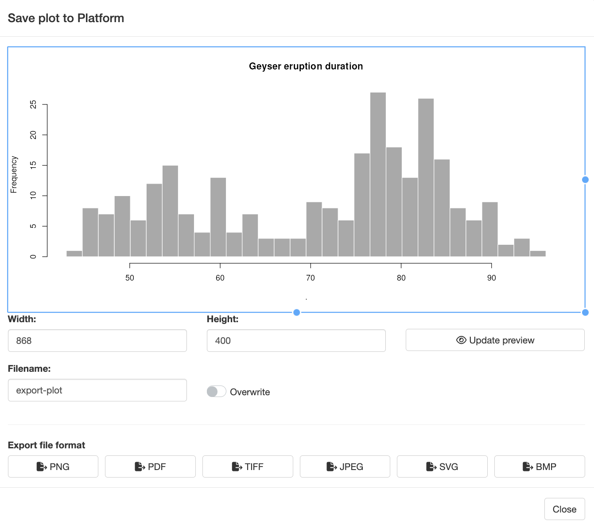

Overview
sbShinyModules is an R package designed to simplify the development of Shiny applications specifically for hosting as on-demand Shiny applications on Seven Bridges Platforms. This package aims to assist both internal and external developers by providing pre-built, reusable Shiny modules tailored to fit Seven Bridges hosting infrastructure.
By using these modules, developers can focus on the unique aspects of their applications without needing to research and implement common functionalities themselves. Modules such as file pickers and file exporters are designed to work seamlessly within on-demand Data Studio hosting solution, allowing for easy integration.
A detailed guideline for integrating modules into your Shiny apps and publishing them on our Seven Bridges Platform can be found here.
Installation
Install the development version from GitHub using the remotes package:
# Install the remotes package if you haven't already
# install.packages("remotes")
# Install sbShinyModules from GitHub
remotes::install_github("sbg/sbShinyModules@develop") Note on Dependencies
The sbShinyModules package has a core set of functionalities that are available by default upon installation. However, the get_all_project_files() function requires the xattrs package for extended attribute support.
For Unix-based Systems (Linux, macOS):
- xattrs Package: To use the get_all_project_files() function, you need to install the xattrs package. On Unix-based systems, you can install it with:
remotes::install_github("hrbrmstr/xattrs")- System Dependencies: On some Unix-based systems, additional system libraries might be required. For example, on Ubuntu Linux, you need the libattr1-dev library. Install it using:
sudo apt-get update
sudo apt-get install libattr1-devFor macOS users, additional system libraries are typically not required for xattrs, but ensure your system is up-to-date.
For Windows Users:
- The get_all_project_files() function is not available on Windows systems because it depends on the xattrs package, which requires extended attribute functions that are not supported on Windows.
By default, all other modules and functions of the sbShinyModules package will be available to you without the xattrs package.
Note: The Data Studio RStudio environments on Seven Bridges Platforms are based on Ubuntu, a Unix-based system. While this should facilitate the installation of the xattrs package, you might still need to install the libattr1-dev library before the xattrs package can be successfully installed.
Features
File Picker Module
The File Picker Module enables users to select files from Platform projects within a Shiny app. It supports both single and multiple file selections with a user-friendly interface.
# UI part
mod_file_picker_ui("file_picker_1")
# Server part
mod_file_picker_server("file_picker_1", files_df, selection = "single") 
Plot Exporter Module
The Plot Exporter Module allows users to save and export plots generated within a Shiny app. It supports various output formats and integrates with Seven Bridges Platform for seamless project file management.
# UI part
mod_plot_exporter_ui("plot_exporter_1", save_button_title = "Save Plot")
# Server part
mod_plot_exporter_server(
id = "plot_exporter_1",
plot_reactVals = helper_reactive,
output_formats = c("png", "pdf"),
module_title = "Export Plot",
sbg_directory_path = "/sbgenomics",
btns_div_width = 12
)

Generic File Exporter Module
The Generic File Exporter Module provides a flexible solution for saving and exporting a variety of file types from a Shiny app to the Platform project. It supports different file formats and export functions.
# UI part
mod_save_file_generic_ui("file_exporter_1")
# Server part
mod_save_file_generic_server(
id = "file_exporter_1",
reac_vals = list(
FUN = write.table,
args = list(x = my_data_frame, file = "my_file.csv"),
filename = "my_file",
extension = "csv",
overwrite = TRUE
),
sbg_directory_path = "/sbgenomics") get_all_project_files() Function
This utility function simplifies file management by efficiently retrieving detailed information about files within a specified directory.
Important Note!
Platform Compatibility: The
get_all_project_files()function is supported exclusively on Unix-based systems (e.g., Linux, macOS) and is NOT available on Windows.Dependencies: The
xattrsR package is required for using this function. Please ensure that the package is installed so that the full functionality is enabled.
# Create a mock directory on the sbgenomics/project-files path and populate it
# with some test fles to test the get_all_project_files() function
all_files_df <- sbShinyModules::get_all_project_files(
path = "/sbgenomics/project-files"
)
head(all_files_df)